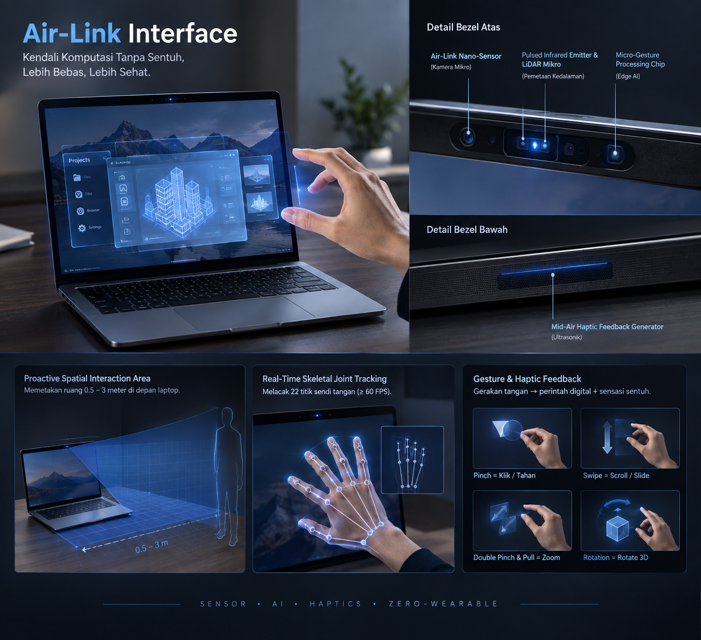

BLOG TERBARU
Air-Link Interface: Sistem Navigasi Komputasi Tanpa Sentuh

Perkembangan teknologi layar sentuh dan perangkat VR/AR saat ini masih menyisakan kendala ergonomis serta kebersihan. Sebagai solusi, artikel ini membahas konsep Air-Link Interface, sebuah sistem kendali berbasis sensor gestur spasial proaktif yang ditanam langsung di bodi laptop melalui bezel (tepat di samping kamera piranti). Teknologi ini memungkinkan interaksi nirkabel seutuhnya tanpa perlu menyentuh layar atau menggunakan alat tambahan di tubuh.
Lanjutkan Membaca